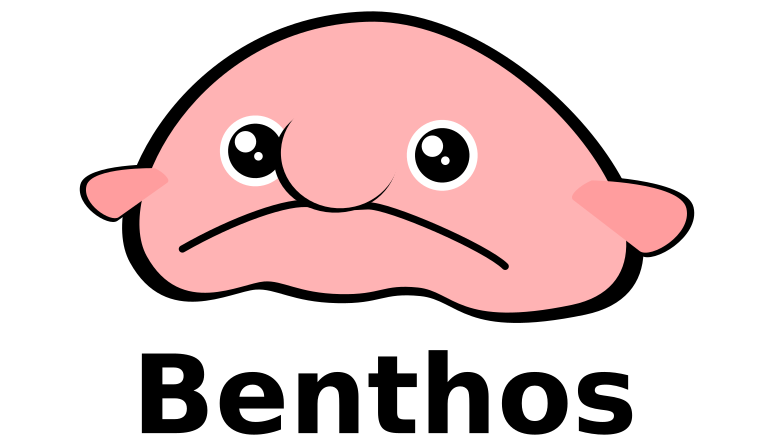

Benthos config generator

Benthos is a streaming service, able to connect various sources and sinks and perform arbitrary actions, transformations and filters on payloads.
The Benthos Config Generator
simplifies
the process of creating JSON service configurations.
Generate config
Benthos config
{{ config }}